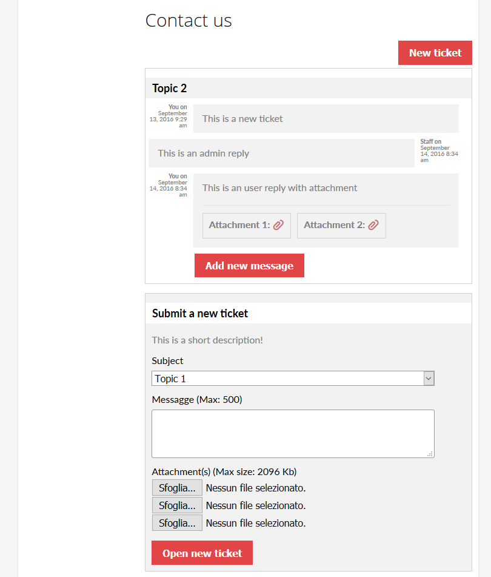
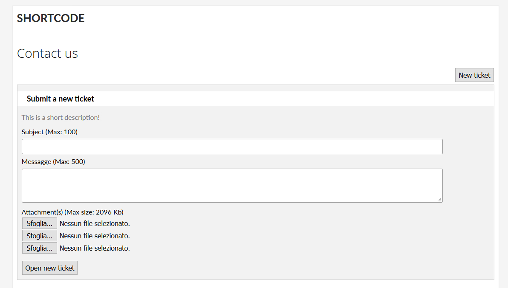
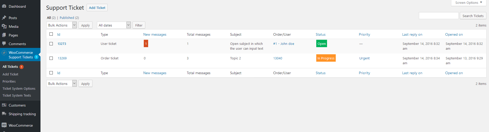
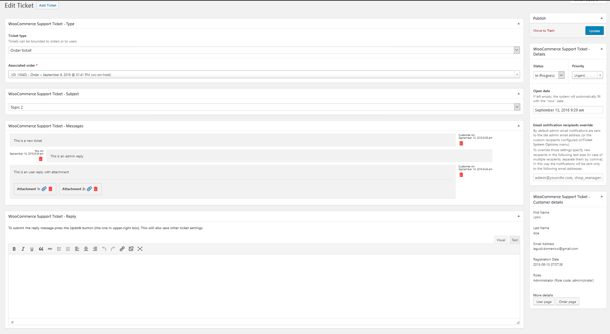
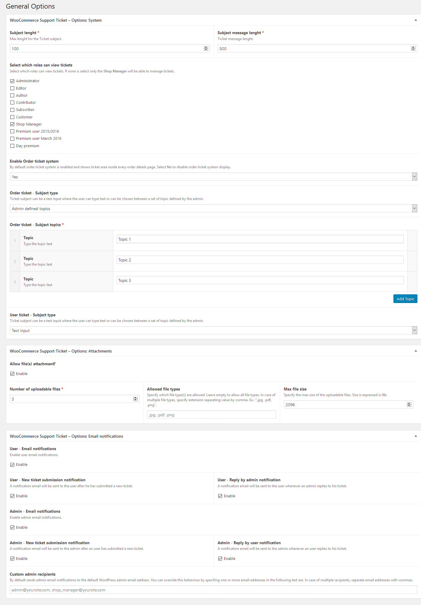
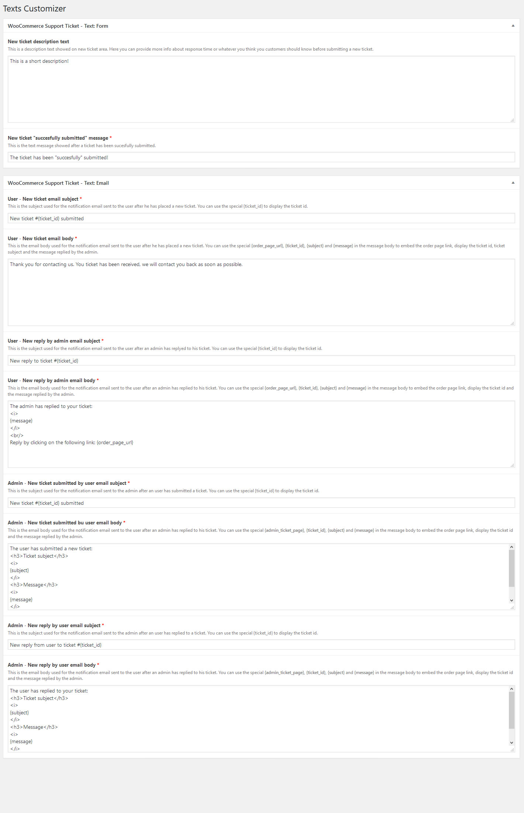

WooCommerce Support Ticket System
- created: 15/09/2016
- latest update: 15/09/2016
- by: Lagudi Domenico
First download the plugin file zip file, then there are two ways for installing:
1) The best way to install is via the Plugins > Add New Plugins section in the Wordpress Backend.
2) You can also manually bu unzipping plugin file in /wp-content/plugins directory
Once the plugin is installed please activate.
After activating, the plugin will add on the WordPress menu a new "WooCommerce Support Tickets" voice. The shop admin will be able to manage Order and User Tickets, System options and customize some texts.
Once activated, will automatically add a ticket area in all frontend order detail pages. In this special area the user can submit new tickets, read the admin replies and submit new messages.
Ticket system usage is quite simple. The user can submit new ticket using the special "Submit new ticket" area, read the admin reply for each tickets and leave new message. He can also optionally attach files.
Once a ticket is submitted, by default, the customer and the admin will receive a notification email (notification system can be disable in Options menu).

Using the special [wcsts_ticket_area] shortcode the shop admin can render the user ticket area in any frontend page.
Once a ticket is submitted, by default, the customer and the admin will receive a notification email (notification system can be disable in Options menu).
NOTE: to customize the login message, just use the following format: [wcsts_ticket_area]Type the message you want to display, html code is accepted[/wcsts_ticket_area]

In the backend Ticket system managment area, the shop admin will be able to check all the tickets. A ticket can have the following attributes:
- Type: can be Order or User. The first type means that the ticket was submitted via the order details page, it is associated to a specific order.
User type is a "generic" ticket submitted via the Ticket area rendered via the [wcsts_ticket_area] shortcode. It is associated to a specific user
- Associated User/Order
- Status: It can be Open, In Progress or Closed
Deleting a ticket, the system will delete all its related metainfo including attachments! In this way your server and your db will be always clean!

Clicking on a ticket, the Admin can edit its info, read customer personal data, download (and delete) attachments and reply to the user. On ticket details page can be also overiden the notification emails recipient(s)

The plugin allows the shop admin many customization, as:
- User/Order ticket subject type: Subject can be an open text (with lenght limit) or a select menu by which the user has to select one of the preselected topics
- Messages and subject lenght limit
- Disable order ticket system: disabling the ticket area will no longer be showed on every order details page. The shop admin will be still able to display the User
ticket area using the [wcsts_ticket_area] shortcode
- Attachments: enable attachments, number of attachable file, size and types
- Email notification system: enable disable user and/or admin notifications

Texts
The shop admin can customize the following texts:
- New ticket description: displayed on the new ticket box. It could contain various info, like ticket avarage processing times
- New ticket "succesfully submitted" message: This message is displayed after a ticket has been succesfully submitted by the user
- Notification emails subject and body: All email subject and messages can be customized. Furthermore can be used special place holder like {subject}, {message}, {ticket_id}
to embed dinamic content about the current ticket message.
